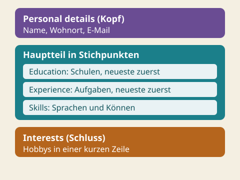

Der Lebenslauf (CV)
Mit einem KI-Tutor lernen
Ein KI-Tutor erklärt dir diese Seite und hilft dir bei den Aufgaben. Wähl deinen Assistenten:
Mit Claude öffnen Mit ChatGPT öffnen Mit Mistral Vibe öffnen
Du nutzt dein eigenes Konto beim Anbieter. Der Assistent ist kein Angebot von lernapps.net: lernapps liefert nur Inhalte und Aufgaben. Die Wahl gilt für alle Seiten, nur auf diesem Gerät.
Worum es geht
Auf der Seite davor hat Sophie Mr Anderson eine formelle E-Mail geschrieben, und er hat sie um einen CV und einen kurzen Brief gebeten. Du kennst auch schon Berufe und wie man ein Datum auf Englisch schreibt. Jetzt schreibt Sophie ihren CV für den Ferienjob in der Stadtbücherei von Millbrook. CV (curriculum vitae) heißt Lebenslauf. Danach kannst du einen englischen CV schreiben.
Aufgabe
Lösung
Mein ganzes Leben mit allen Einzelheiten, von der Grundschule an
So ein Lebenslauf wird zu lang. Er nennt nur, was für die Stelle wichtig ist, meist auf ein bis zwei Seiten.
Kurz, was ich gelernt habe, schon getan habe und kann richtige Antwort
Ein Lebenslauf zählt Ausbildung, Erfahrung und Fähigkeiten kurz auf.
Warum ich gerade diese Stelle haben möchte, mit meinen Gründen
Das schreibst du in der Bewerbung. Der Lebenslauf zählt nur auf. Die Bewerbung kommt auf der nächsten Seite.
Ein Lebenslauf ist eine kurze Liste von Fakten. Gründe und Wünsche gehören in die Bewerbung.
Lesestück · Sophies CV und eine Nachricht
Lies zuerst Sophies CV in zwei Abschnitten, dann die Nachrichten von Mr Anderson und Sophie. Die Zahlen vor den Zeilen brauchst du bei den Aufgaben. Schwere Wörter stehen hier.
| Englisch | Deutsch |
|---|---|
| curriculum vitae | der Lebenslauf |
| exchange year | das Austauschjahr |
| experience | die Erfahrung |
| skills | die Fähigkeiten |
| reliable | zuverlässig |
| shelves | die Regale |
| application | die Bewerbung |
| details | die Angaben |
- Sophie Weber · Curriculum vitae
- Personal details
- Living in Millbrook for one school year. Email: sophie.weber@example.org
- Education
- September 2026 – present: Millbrook School, exchange year (main subjects: English, History, Art)
- 2021 – 2026: Gymnasium, Germany
Aufgabe
Lösung
Von September 2026 bis zum Geschenk
Present kann „Geschenk“ heißen, aber in einem Zeitraum meint es etwas anderes.
Von September 2026 bis heute richtige Antwort
Richtig: Sophie besucht die Millbrook School noch jetzt.
Nur im Monat September 2026
Der Strich zeigt einen Zeitraum, nicht nur ein Jahr.
Present am Ende eines Zeitraums heißt, dass etwas noch andauert.
- Experience
- September 2026 – present: Writer for the school newspaper. Writes short reports and interviews every month
- September 2026 – present: Helper in the school library. Puts books back on the shelves and helps students to find books
- Skills
- Languages: German (first language), English (good)
- Reliable, friendly, good with computers and good at working in a team
- Interests
- Reading (novels and short stories) and swimming
Aufgabe
Lösung
Zeile 9 richtige Antwort
Zeile 9 sagt, dass sie Bücher ins Regal stellt und Schülern beim Suchen hilft.
Zeile 8
Zeile 8 gehört zur Schülerzeitung, nicht zur Bibliothek.
Zeile 12
Zeile 12 nennt Eigenschaften, nicht Aufgaben in der Bibliothek.
Unter Experience steht je Aufgabe ein Zeitraum und was Sophie dort tut.
- Mr Anderson: Dear Sophie, thank you for sending your CV. It is clear and easy to read, the parts are in a good order, and I am glad that you already help in a library.
- I have two questions. First, what exactly do you do in your school library, and do you work with readers of different ages?
- Second, which three days a week can you work in the summer holidays? Please write to me at library@example.org.
- Sophie: Dear Mr Anderson, thank you for your message. At school I put books back on the shelves, answer questions from students and teachers and help them to find the right book. I can work on Monday, Wednesday and Friday. In the summer I would also like to join your reading groups.
- Mr Anderson: Thank you, Sophie. That is very helpful. Now please send me your short letter too, and I will read both together.
- Sophie: Thank you very much. I will send the letter tomorrow.
Aufgabe
Lösung
Zeile 16 fragt, was Sophie in der Schulbibliothek tut richtige Antwort
Richtig: Das ist die erste Frage in Zeile 16.
Zeile 17 fragt, an welchen Tagen Sophie arbeiten kann richtige Antwort
Richtig: Das ist die zweite Frage.
Zeile 15 fragt, wie alt Sophie ist
Zeile 15 lobt den CV. Nach dem Alter fragt Mr Anderson nicht.
Die Fragen stehen in den Zeilen 16 und 17. Sophie antwortet in Zeile 18.
Offene Aufgabe
Welche Angabe in Sophies CV ist für eine Bücherei am wichtigsten, und warum? Schreibe zwei bis drei Sätze auf Englisch.
Eine gute Antwort enthält:
- Du nennst eine Angabe aus dem CV, zum Beispiel eine Aufgabe unter Experience. Nachlesen
- Du gibst einen Grund mit because. (Form)
- Du schreibst in ganzen Sätzen. (Form)
Lösung
I think the line about the school library is the most important one because Sophie already does similar work. A library needs people who like books. Die App bewertet deinen Text nicht. Vergleiche ihn mit den Punkten.
Der Bauplan eines Lebenslaufs

© CC-BY-4.0Der Bauplan von oben nach unten gelesen: so ist auch Sophies CV gebaut.
Der Bauplan des CV hat feste Teile: Personal details als Kopf, dann Education, Experience und Skills als Hauptteil, zuletzt Interests. Jeder Teil besteht aus Stichpunkten, nicht aus langen Sätzen, und das Neueste steht zuerst. Einen Zeitraum schreibst du mit Strich, zum Beispiel „2014 – 2016“; was noch andauert, endet mit present. Monate schreibst du aus („June 2021“), nicht als „06.2021“. Im Vereinigten Königreich und in den USA stehen im CV kein Foto, kein Alter, kein Geschlecht und kein Familienstand (marital status). In den USA heißt der Lebenslauf meist résumé. Ein CV ist meist ein bis zwei Seiten lang.
Merke
Ein CV zählt auf, er erzählt nicht: Stichpunkte, neueste Angabe zuerst, Zeitraum mit Strich, Monat ausgeschrieben.
Übung
Aufgabe
Lösung
Richtige Antwort: Email: j.clark@example.org – Personal details; 2018 – 2022: Greenfield School – Education; 2022 – present: Shop assistant in a clothes shop – Experience; Languages: English (first language), Spanish (a little) – Skills; Football, cooking and chess – Interests
Persönliche Angaben und Kontakt stehen oben. Schulen gehören zu Education, Arbeit zu Experience, Sprachen zu Skills und Hobbys zu Interests. Einen Teil „Photo“ gibt es im britischen CV nicht.
Aufgabe
Lösung
Zeile 2, das Alter richtige Antwort
Das Alter gehört im Vereinigten Königreich nicht in den CV.
Zeile 3, der Familienstand richtige Antwort
Der Familienstand wird im britischen CV nicht genannt.
Zeile 4, das Foto richtige Antwort
Im Vereinigten Königreich und in den USA steht im CV kein Foto.
Zeile 6, der lange Satz über die Arbeit richtige Antwort
Ein CV besteht aus Stichpunkten. Der Satz muss kurz werden, zum Beispiel „Serves customers and makes coffee“.
Zeile 7, das Datum mit Punkten richtige Antwort
Zahlen mit Punkten sind die deutsche Schreibweise. Schreibe den Monat aus, zum Beispiel „February 2023“.
Zeile 5, der Zeitraum mit der Schule
Zeile 5 ist richtig: Zeitraum mit Strich, dann der Name der Schule.
Zeile 8, die Sprachen
Zeile 8 ist richtig: Sprachen stehen unter Skills.
Die Zeilen 2, 3 und 4 sind persönliche Angaben, die im CV fehlen. Zeile 6 ist ein Satz statt Stichpunkten, Zeile 7 hat ein deutsches Datum.
Aufgabe
Schreibe die Zeile für den CV: erst der Zeitraum, dann die Angabe. Die Vorgabe ist auf Englisch.
Tipp
Zuerst der Zeitraum, dann ein Doppelpunkt und die Angabe. Einen Monat schreibst du aus.
- Experience: helper in the sports club, from 2021 until now
- Education: Greenfield School, 2018 to 2022
- Skills: swimming test, month 2, year 2023
Lösung
- 2021 – present: helper in the sports club (auch richtig: 2021 - present: helper in the sports club)
- 2018 – 2022: Greenfield School (auch richtig: 2018 - 2022: Greenfield School; 2018 to 2022: Greenfield School)
- February 2023: swimming test
In jeder Zeile steht zuerst der Zeitraum, dann die Angabe. Noch laufende Zeiträume enden mit present, Monate stehen ausgeschrieben.
Aufgabe
Höre den Satz und schreibe ihn auf.
- KI
- KI
- KI
Lösung
- Always start with your newest experience.
- Please do not add a photograph.
- Keep every line clear and simple.
Die Sätze sagen, wie ein CV aufgebaut wird.
Selbst schreiben und sprechen
Aufgabe
Höre die Sätze und sprich sie nach. So kannst du Fragen zu deinem CV beantworten.
- I am looking for work during the holidays.KI
- I can send you more information tomorrow.KI
- Thank you for your quick answer.KI
Zum Aufnehmen braucht diese Aufgabe JavaScript. Die Beispiele kannst du auch ohne anhören.
Lösung
- I am looking for work during the holidays.
- I can send you more information tomorrow.
- Thank you for your quick answer.
Offene Aufgabe
Schreibe die Stichpunkte für den CV einer erfundenen Person, die einen Ferienjob in einem Café sucht. Nimm keine echten Daten. Schreibe alle fünf Teile.
Eine gute Antwort enthält:
- Die Teile stehen in der Reihenfolge des Bauplans, vom Kopf bis zu den Interests. Nachlesen
- Foto, Alter und Familienstand fehlen. Nachlesen
- Jeder Teil besteht aus Stichpunkten mit Zeitraum, das Neueste steht zuerst. (Form)
- Zeiträume haben einen Strich, ein laufender Zeitraum endet mit present, Monate sind ausgeschrieben. (Form)
Lösung
Jordan Lee Personal details Email: jordan.lee@example.org Education 2021 – present: Hillside School 2017 – 2021: Riverside School Experience 2023 – present: Helper at a school cake sale, serves tea and coffee Skills Languages: English (first language), French (a little) Friendly and good with numbers Interests Football and drawing Die App bewertet deinen Text nicht. Vergleiche ihn mit den Punkten.
Wie es weitergeht
Der CV zählt die Fakten auf. Auf der nächsten Seite schreibst du die Bewerbung dazu: Dort erklärst du in ganzen Sätzen, warum du für die Stelle passt.
Fehler gefunden oder eine Idee für diese App?